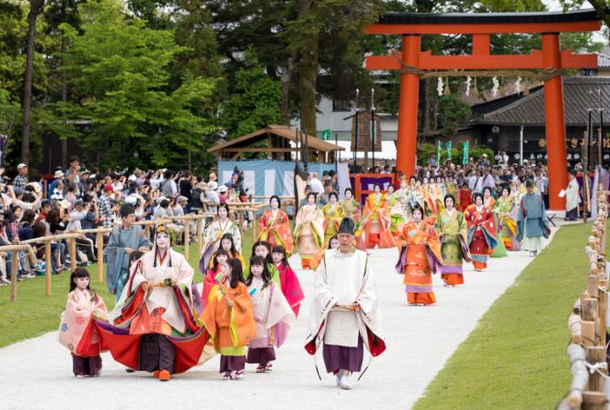

Gion Festival(Gion Matsuri)
Experience the captivating Gion Festival, Kyoto’s iconic celebration held annually in July. Dating back to the 9th century, this grand festival features the majestic Yamaboko Junko parades, where towering floats adorned with intricate decorations glide through the streets. Throughout the month, Kyoto buzzes with traditional music, dance performances, bustling street stalls, and lively night markets

Aoi Matsuri (Hollyhock Festival)
One of Kyoto's three major festivals, the Aoi Matsuri features a grand procession from the Imperial Palace to the Kamo Shrines. Participants dressed in Heian-era attire and decorated with hollyhock leaves bring ancient Kyoto to life.

Jidai Matsuri (Festival of the Ages)
Celebrating Kyoto’s history, the Jidai Matsuri features a large parade with participants dressed in costumes from various periods, from the Heian period to the Meiji Restoration. The procession begins at the Imperial Palace and ends at Heian Shrine.

To-ji Temple Flea Market (Kobo-san)
Held monthly at To-ji Temple, this market commemorates the death of the temple's founder, Kobo Daishi. It offers antiques, crafts, food, and a lively atmosphere.

Kurama Fire Festival (Kurama no Hi Matsuri)
Held in the mountain village of Kurama, this fiery festival involves locals carrying large torches and lighting bonfires, creating a dramatic and ancient ritualistic atmosphere.

Arashiyama Hanatoro
A stunning event where the streets of Arashiyama are illuminated with thousands of lanterns, and the famous bamboo groves and Togetsukyo Bridge are beautifully lit up. The event includes traditional performances and a serene, magical ambiance.